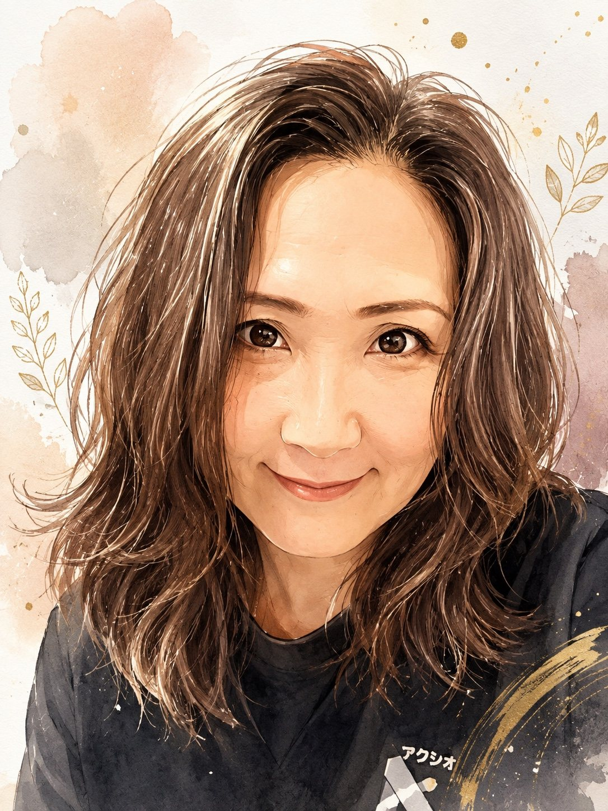

プログラミング指導
Scratch・Roblox・Pythonなど、学習する内容や経験に応じて、子どもたちが自分で考えて取り組めるようサポートしています。
子どもたちの「好き」と「できた！」を、学びの力に。

谷口美香
プログラミング教室 アクシオ｜代表講師
子どもたちは、興味を持つことも、理解する速さも、それぞれ違います。
だからこそ、学習の進め方を一律に決めるのではなく、目の前の子どもが何に興味を持ち、どこで困っているのかを大切にしたいと考えています。
プログラミングを通して、作品を完成させる楽しさだけでなく、自分で考え、試し、工夫する経験を重ねてほしい。そんな思いで指導しています。
プログラミングの指導と、子どもの発達支援。その両方に携わっています。
Scratch・Roblox・Pythonなど、学習する内容や経験に応じて、子どもたちが自分で考えて取り組めるようサポートしています。
児童発達支援の仕事にも携わっています。一人ひとりの特性や得意・苦手に目を向け、伝え方や関わり方を工夫することを大切にしています。
「何を作りたい？」「どこが難しかった？」を一緒に確かめます。
答えをすぐに伝えるだけでなく、自分で試せるように支えます。
完成した作品だけでなく、挑戦や工夫にも目を向けます。